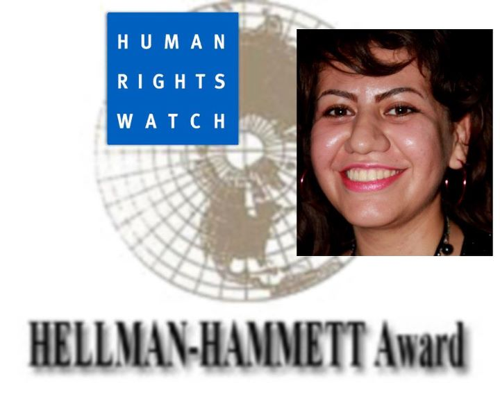

|
|

کاوه کرمانشاهی، جایزه ی هلمت-همت خود را به «بهاره علوی» تقدیم کرد
شنبه26 شهریور 1390
تغییر برای برابری: کاوه کرمانشاهی، یکی از فعالان کمپین یک میلیون امضا و فعال حقوق بشر در ایران، یکی از برندگان جایزه ی هلمن- همت است. او در مصاحبه ای که در همین رابطه با رادیو زمانه داشت و پس از آن در صفحه ی فیس بوک خود اعلام کرد که این جایزه را به دوست و همراه کمپینی اش «بهاره علوی» تقدیم کرده است. بهاره علوی، بهار امسال در یک سانحه ی رانندگی جان باخت و کاوه می گوید که از جسارت های او در نوشتن بسیار آموخته است.
متن منتشر شده از سوی کاوه کرمانشاهی به این شرح است:
انتخاب شدن به عنوان یکی از برندگان جایزهایی که به یاد دو انسان بزرگ نامگذاری شده و از سوی یک سازمان معتبر جهانی اهدا میشود، یقیناً مایهی افتخار و خوشحالیست؛ ولی مطمئناً بسیارند کسانی که از من برای کسب این جایزه بسیار مستحقتر هستند. اما با لطف دوستانی که مرا به عنوان کاندیدا به دیدهبان حقوق بشر معرفی کردند و نویسندگانی که در هیئت داوران «هلمن ـ همت» مرا به عنوان یکی از برندگان برگزیدند، این شانس نصیب من شد.

اهدای این جایزه بهانهایی است برای یادآوری ارزش کار همهی آن کسانی که به خاطر نوشتهها و گفتههای انتقادی و اعتراضی خود از سوی حاکمیت هر یک به نوعی مورد اذیت و آزار قرار گرفتهاند. متاسفانه این عزیزان آنقدر زیادند که اشاره به نام هر کدام میتواند کملطفی در حق دیگرانی باشد که حتی ممکن است نامشان را هم ندانیم!
در این میان اما به احترام کسی که نامش بیشتر از هر کس دیگر برایم تداعی کننده شجاعت در گفتن و نوشتن است و از آنجا که مناسبت جایزه «هلمن ـ همت» نیز ارج نهادن به فعالان و نویسندگان منتقد و معترض و دلجویی از آنانی است که مورد مجازات حاکمیتها قرار گرفتهاند؛ این جایزه را از طرف خودم تقدیم میکنم به «بهاره علوی» که همیشه نوشتههای انتقادیاش، به خصوص جسارتش در شکستن تابوهای جامعهی مردسالار برایم آموزنده و تحسین برانگیز بود.
بهاره عزیز، بهارِ امسال از بین ما رفت... اما نام و یادش با افکار بلندی که داشت و نوشتههایی که از خود در وبلاگش «دختر خورشید» به جای گذاشت، تا همیشهی همیشه زنده است برای ما... تقدیم سمبلیک این جایزه به او نیز بهانهایی برای همین یادآوری و زنده نگاه داشتن نام بزرگش است...